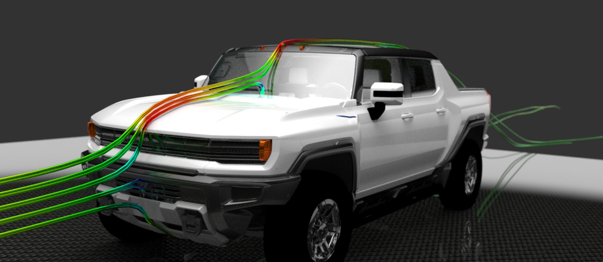
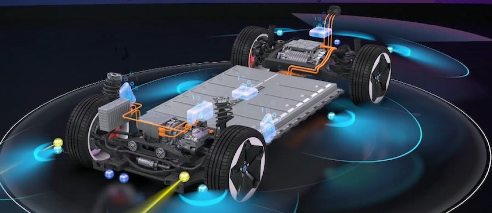
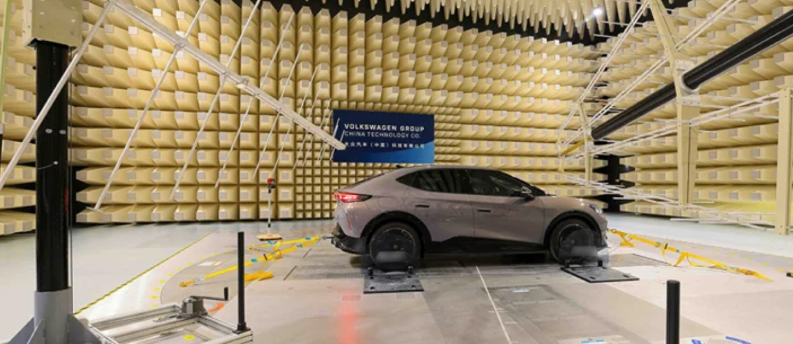
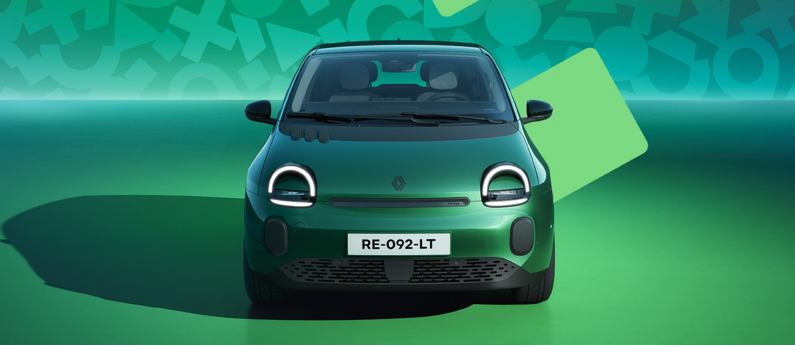
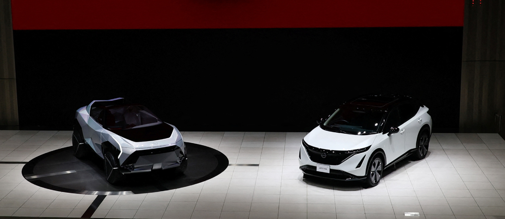
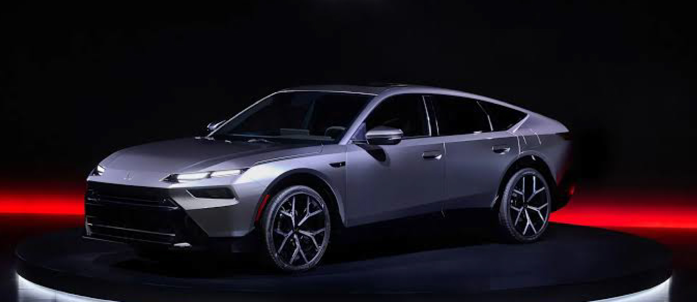
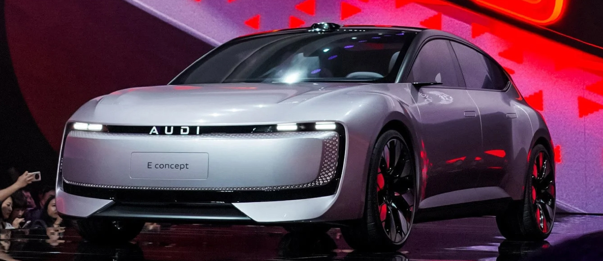
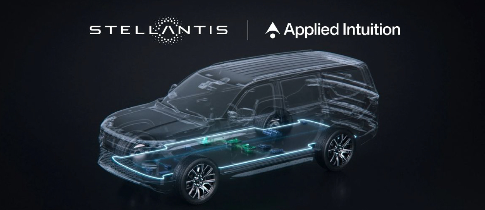
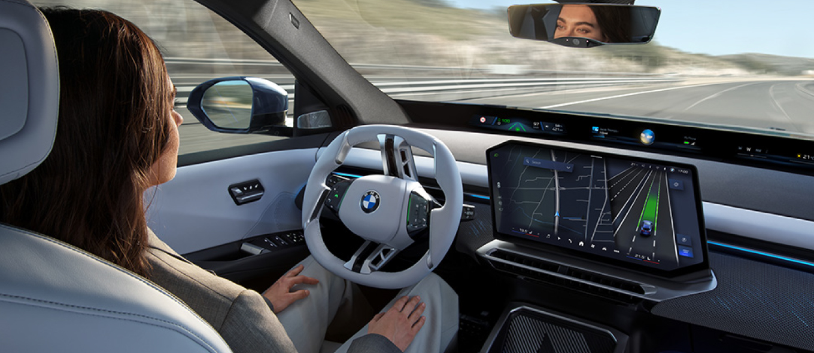

The automotive product list is shrinking—but it is still not efficient enough. JATO data shows EU5 markets cut retail price-list depth by 44–63% since 2015, yet 30–50% of remaining versions generate fewer than one registration per month. The industry is entering a new regime: concentrated offer, accelerated refresh, and data-led precision.
The automotive industry is moving into a new product regime. The old model was built around deep price lists: many engines, many trims, many local versions, and many marginal configurations. The emerging model is different.
Fewer structural versions, fewer platforms, more closed packages, faster refreshes, and higher concentration. During May 2026 we wrote a short text using the term “Fashionization”, referring to how the Chinese industry was introducing a new dynamic where brands offered fewer versions but updated them more often. In this In Depth we extend that thesis and back it with more quantitative and qualitative facts.
The next competitive advantage will not be having the longest price list. It will be knowing which few models, versions and refreshes the market actually wants.
Astara Intelligence · In Depth #86The evidence is already very visible in Europe. JATO’s EU5 report, launched in July 2026, shows that retail price-list depth has fallen sharply between 2015 and 2025. Yet even after this rationalization, many listed versions still produce almost no market absorption. The key message is not simply that OEMs have fewer versions than before. The real issue is that even the reduced offer remains inefficient: in Spain, France and Italy, roughly four to five versions out of every ten listed generated 12 registrations or fewer during 2025.
That means the problem is not just excessive historical complexity; it is also poor precision in deciding which versions and specifications actually create customer interest. The shift we are describing is therefore not only about reducing the number of SKUs. It is also about changing the rhythm of product renewal—compressing development timelines, accelerating refreshes and applying better data to decide what to launch, what to kill and what to update.
JATO’s EU5 data shows that retail price-list depth has contracted sharply since 2015. But the rationalization has not yet been precise enough.
Spain cut its listed versions by 44%, Germany by 51%, France by 63%, Great Britain by 50% and Italy by 46%. These are significant reductions. And yet, across these same markets, between 30% and 50% of all remaining listed versions still fail to achieve even one registration per month during 2025. JATO defines “unsold versions” as versions with 12 registrations or fewer in 2025—equivalent to less than one registration per month.
The implication is that OEMs have pruned the long tail, but the remaining list still contains a significant share of versions that are commercially invisible. Spain and Italy are the most striking cases: 42% and 45% of their listed versions respectively fell below this threshold. Germany shows the best performance at 21%, suggesting a more disciplined version architecture.
This data establishes the core tension: the industry has already started the rationalization process, but has not yet completed it. The next phase of the transition is not simply about listing fewer versions—it is about ensuring that the versions that are listed are genuinely wanted by the market.
| EU5 Market | Price-list reduction 2015–2025 |
% versions with ≤12 registrations, 2025 |
|---|---|---|
| Spain | -44% | 42% |
| Germany | -51% | 21% |
| France | -63% | 42% |
| Great Britain | -50% | 27% |
| Italy | -46% | 45% |
Electrification initially pushed OEMs to expand BEV and PHEV availability. This made sense: manufacturers needed to cover CO₂ targets, public incentives, company-car taxation, fleet channels, range expectations, price thresholds and technology positioning.
But JATO’s data shows that the BEV line-up has often expanded faster than actual market absorption. Spain and Italy show the highest inefficiency rates—55% and 58% of their BEV listed versions respectively generated 12 registrations or fewer in 2025. Even Germany, the most efficient overall market, sees 31% of BEV versions below that threshold.
This matters because BEV versions have grown significantly from 2020 to 2025. But a significant share of them is not converting into registrations. The implication is not that BEVs are failing as a technology. The implication is more specific: many BEV configurations are failing. Battery size, price point, range, trim, channel and positioning are not equally attractive. OEMs cannot assume that adding another BEV version automatically creates demand.
The IEA’s 2025 global data adds a second layer to this thesis. In 2025, there were around 630 battery-electric car models available globally, yet just five models accounted for approximately 20% of global BEV sales. The top 35 models alone captured around half of all global BEV sales. The market is dominated by superstars, while the long tail of models and versions generates negligible traction.
Even in the software-defined vehicle era, where adding a new trim costs less than before, launching it still has a cost. The long tail in BEV is not just inefficient—it is strategically misleading.
Astara Intelligence · In Depth #86| EU5 Market | % BEV versions with ≤12 registrations, 2025 |
|---|---|
| Spain | 55% |
| Germany | 31% |
| France | 43% |
| Great Britain | 32% |
| Italy | 58% |
Before Covid-19, approximately 50 brands were the average number of players in each EU5 country. Starting from 2021, the average number of brands grew to 70 in 2025, driven almost entirely by Chinese newcomers.
The average number of models available in the market rose from 367 in 2019 to 431 models in 2025. Spain went from 347 to 449 models. Germany from 377 to 452. Italy from 370 to 438. This is not a marginal change—it represents a 17–25% increase in model choice within six years.
When a customer faces the purchase decision of a new vehicle, they are facing one of the most economically significant purchases of their lives—second only to a home. The automotive buyer decision process is one of the longest and most complex across all categories. For a non-fan or non-expert profile, it takes months. With new technologies, new powertrains, new brands and their models, that process has become increasingly difficult.
And we are only at the beginning of the Chinese landing in Europe. The brands currently present in the EU market represent the tip of the arrow. More entrants will follow, which means more choice and deeper complexity for the buyer.
Inside this increasing complexity, customers are going to go less deep into versions and trims—simply because they will spend their time and energy comparing brands and models. The total energy and time of the customer journey will be roughly the same; what is changing is where those attributes are spent. The implication for OEMs is clear: trim depth will lose relevance as a competitive lever precisely when model breadth and brand novelty dominate the buyer’s attention.
The shift is not only about reducing versions. It is also about changing the rhythm of product renewal. This is why we use the term “Fashionization”: it brings echoes from fast-fashion apparel, where time-to-market for new collections has been compressed as far as possible.
McKinsey states that new market entrants have cut automotive time-to-market in half, while Chinese EV makers launch new models in about 24 months compared with up to 45 months for mass-market OEMs. Reuters describes the Chinese advantage even more aggressively: some Chinese automakers have compressed vehicle development to as little as 18 months, compared with more than five years for established manufacturers. The same Reuters investigation reports that Chinese-brand electric and plug-in hybrid models on sale domestically had an average age of 1.6 years, versus 5.4 years for foreign brands.
This supports the idea of automotive fast fashionization: the product does not necessarily change through a full generational redesign every six to eight years. Instead, it changes through faster refreshes, new battery options, updated software, new limited editions, revised pricing, improved ADAS, new interiors and market-specific packages. The OEMs that can partner with Chinese players to access their speed advantage are doing so. Legacy OEMs are also openly moving toward simplification: Volkswagen’s 2026 plan explicitly includes reducing complexity and streamlining investment. Ford announced “dramatic reductions” in product complexity starting with the 2024 model year. Audi consolidated S3 and Q3 line-ups into single, fully equipped trims for 2026.

AI + physics-based simulation to compress design, testing and validation

Systems engineering and agile methods across technical development

Local China R&D, local decision-making and local architecture

Shanghai ACDC development center for European small EVs

CEO mandate to cut slow development cycles across model families

“Triple Half” development-efficiency strategy

China-only AUDI brand co-developed with local partner SAIC

STLA Brain + Applied Intuition Vehicle OS; affordable European E-Car

AI-assisted development & Neue Klasse platform rollout
Digital twins, AI and flexible production network
The industry is not moving toward a simple market with fewer brands or fewer models. In fact, the opposite may happen at the top level: more brands, more Chinese entrants, more EV-native players and more niche models. But underneath that surface variety, OEMs will need to reduce the number of weak versions, low-rotation trims and unnecessary combinations. The future is not “more choice” but better-controlled choice.
The likely outcome is a new balance: fewer trims, more closed packages, faster updates and premium personalisation as a paid layer. This is the automotive version of fast fashionization—not endless variety, but rapid, disciplined, data-led renewal. To accomplish all this, all brands need more knowledge about what to offer and more innovation to select the technologies that increase their speed.